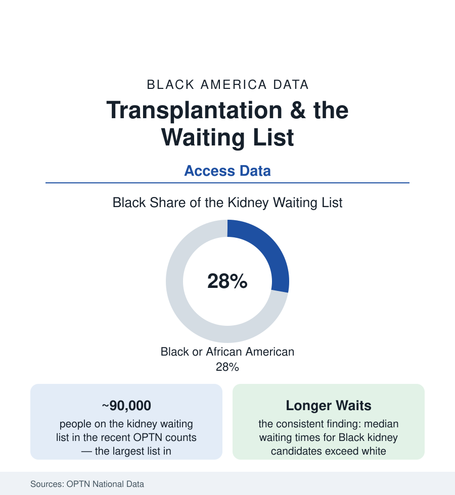

Black Public Health
Organ Transplantation and Black Patients: The Waiting List's Arithmetic
Black patients are about 28% of the kidney transplant waiting list — and wait longer on it. The OPTN data, the referral funnel, and the formula that was rewritten.

The transplant waiting list is the health system's starkest rationing instrument — a ranked queue for organs that arrive only when someone dies — and its data carry one of the file's most complete disparity records: Black patients make up roughly 28% of the kidney waiting list (kidney failure, per the kidney article, falling hardest on Black Americans), are referred and listed later in their disease course, wait longer at equivalent medical priority, and receive living-donor transplants at a fraction of the white rate. Every step of that arithmetic is measured by the registry itself. This article reads it.
The Funnel: From Kidney Failure to the List
The Scientific Registry's stage-by-stage analyses locate the losses: Black patients with kidney failure start dialysis at high rates (the nephrology-referral timing data of the kidney file) but are referred for transplant evaluation at lower rates, complete the evaluation workup more slowly (the multi-visit, multi-specialist gauntlet whose navigation the access literature documents), and are placed on the active list later — entering the queue with less accrued waiting-time credit under the allocation rules that reward time listed. Each stage's gap is individually modest in the adjusted models; compounded, they produce the list's composition and the waits. The center-level data add the geography: transplant centers' acceptance practices (which organs, which candidates) vary widely in the published program reports, and the candidate's center choice — often no choice at all, made by referral default — enters the odds. The preemptive-transplant file is the funnel's sharpest cut: transplantation before dialysis (the best-outcome route) runs at multiples higher for white patients in the registry data, a difference the referral timing explains mechanically and the system has not closed.
The Formula That Was Rewritten: eGFR and Race
The list's most consequential data story is a formula. For decades, the standard kidney-function estimator (eGFR) included a race coefficient that reported higher kidney function for Black patients at the same lab values — systematically delaying their measured disease stage, their nephrology referrals, and their transplant-listing eligibility (which keys to eGFR thresholds) — a correction defended as calibration and indicted as structural delay in the literature that built through the 2010s. In 2021 the National Kidney Foundation and the American Society of Nephrology's task force recommended the race-free refit, laboratories converted, and in a remedy without precedent in the allocation system's history, the OPTN required programs to review their Black candidates' waiting histories and restore waiting time lost to the race-adjusted formula — thousands of candidates receiving credited time in the remediation reports. The episode stands in this atlas as the data-ethics case study: a coefficient, invisible to patients, compounding through every downstream decision — and its correction measurable in the same registry that imposed it.
Living Donation and the Donor Side
The living-donor gap is the list's widest: living-donor kidney transplants (the superior grafts, schedulable and durable) go to Black recipients at roughly a third the white rate in the registry analyses — produced by the donor-side data: family and community donor pools carrying higher rates of the very conditions that disqualify donors (hypertension, diabetes, kidney disease itself), lower solicitation success in the studies of the ask, and the financial disincentives (lost wages, travel, dependent care) the policy file has begun to reimburse only partially. The paired-exchange and voucher programs, the community-education models (the church-based donor-education trials with measured effects), and the deceased-donor side — where Black families' authorization rates for donation after death run below white families' in the procurement data, the trust file's most literal ledger — complete the supply picture. The other organs' lists (liver, heart, lung) repeat the pattern at smaller volumes in the OPTN's annual reports, each with its own allocation score and its own audited disparities.
Reading the Waiting List Data
The queue is not a metaphor: it is a list with names, ordered by rules, audited in public data — and at every audited step, the Black candidate arrives later, waits longer, and receives the living gift less often. Transplantation is where the health system's values become arithmetic with a body count on both sides of the ledger. The registry that exposed the arithmetic also proved it can be rewritten — formula by formula, stage by stage — when the counting is honest.
More in Black Public Health
Hypertension Among Black Adults: Prevalence, Control, and Consequences
About 55 percent of Black adults have hypertension — the highest rate of any U.S. group. Prevalence, onset, control, and the stroke, heart, and kidney consequences in the data.
Diabetes Among Black Adults: Prevalence and Complications
Nearly one in five Black adults has diabetes, diagnosed or undiagnosed — and its complications fall with particular weight. The CDC data on prevalence, control, and outcomes.
Black Life Expectancy: The Gap at Birth and Its Causes
Black life expectancy at birth is about 73 years, roughly five years below the national figure — the summary measure of every health gap in this section. The CDC data.
Source: Organ Procurement and Transplantation Network (OPTN) national data; United Network for Organ Sharing; National Kidney Foundation; American Society of Nephrology; Scientific Registry of Transplant Recipients.